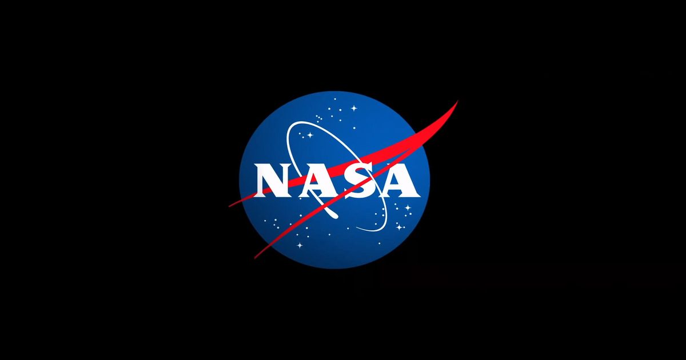

НАСА приглашает СМИ на опыт моделирования посадки на Луну в Калифорнии
Представители СМИ приглашаются на экскурсию на новом симуляторе посадки на Луну в Исследовательском центре Эймса НАСА в Силиконовой долине Калифорнии в четверг, 29 октября, и в пятницу, 30 октября.